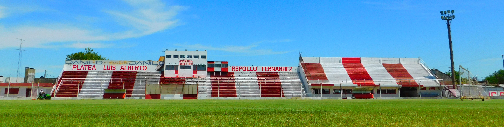

Acerca del Club A. 9 de Julio de Rafaela
Primeros estadios
El primer estadio donde 9 de Julio hizo de local estuvo ubicada en Chacabuco y Catamarca y la segunda, en la “quinta Beraza”, en Alsina y Mendoza.
Luego gracias al aporte de socios y dirigentes el Club compró una manzana en Salta y Coronel Lagos, donde construyó la cancha de fútbol, inaugurada el 9 de julio de 1919.
Estadio actual
En 1938 el Club compró un lote de 5 hectáreas donde se construyó el Estadio de fútbol, inaugurado el 22 de diciembre de 1941.
En 1973, por Asamblea extraordinaria el Club decidió modificar el predio donde estaba ubicado el Estadio, se construyeron dos canchas, una principal con tribunas, vestuarios, cabinas de transmisión, alambrado olímpico y una auxiliar. Fue inaugurada en 1974.
